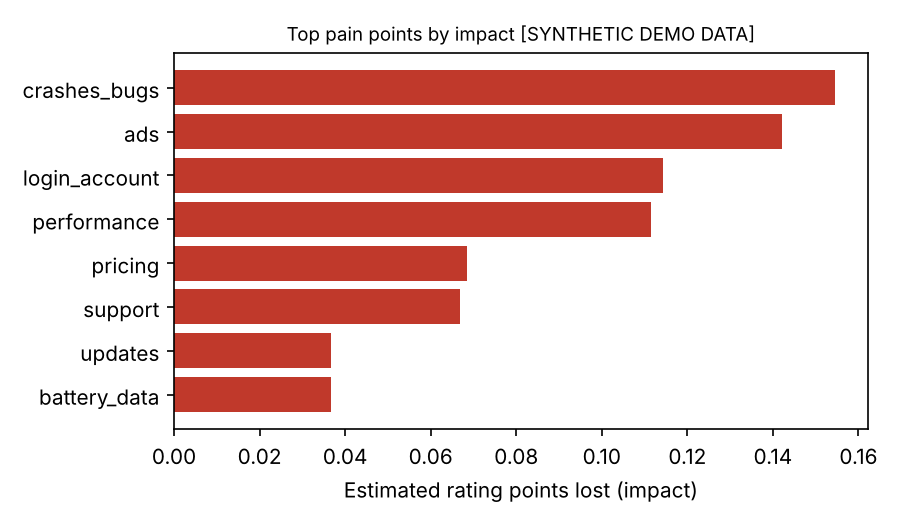
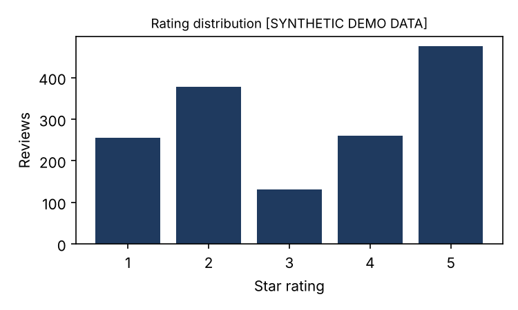
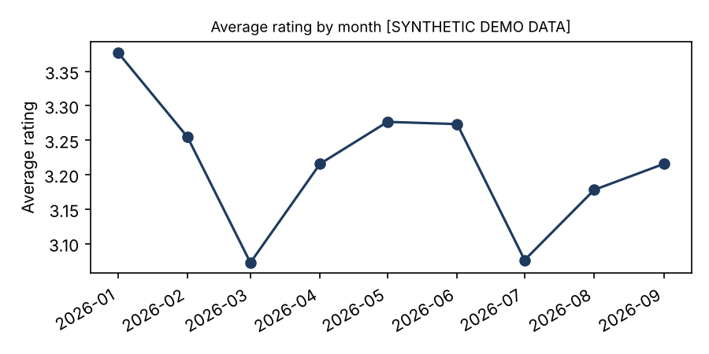

User research at scale · Prioritisation
ReviewLens: turning thousands of app reviews into one prioritised recommendation
Teams usually triage reviews by volume ("lots of people mention the UI"). Volume is the wrong signal. ReviewLens ranks each theme by how many rating points it actually costs the product, so the roadmap starts with the problem that hurts most.
1,500reviews cleaned and tagged
10product themes tagged
Impact= share of reviews × rating gap
6 / 6unit tests passing
The product question
Question
Which single problem, if fixed, would raise the average rating the most?
Why volume misleads
In the demo, UI/UX is mentioned most (15.5% of reviews) but those reviews are positive. Crashes are mentioned less and cost far more.
Output a PM can act on
A ranked table, three charts and CSVs for Power BI/Tableau, plus a one-page recommendation template.
How I'd validate
Hand-label 100 reviews to measure tagging precision; then A/B test the fix and watch rating + crash-free sessions.
Explore: volume vs. impact
Sample report output



Decisions and trade-offs
- Keyword themes over an ML classifier for v1: transparent, editable by a PM, and testable. Precision is the open risk, so it's the first thing to measure.
- "Reliable" flag at ≥30 mentions, so the tool won't let a theme with five angry reviews top the roadmap.
- Impact is correlational: low ratings co-occur with a theme; the A/B test is what proves causation.
Next
- Run on a real public review dataset and publish the top three pain points.
- Measure tagging precision on a 100-review hand-labelled sample.
- Write the recommendation memo for the #1 issue.